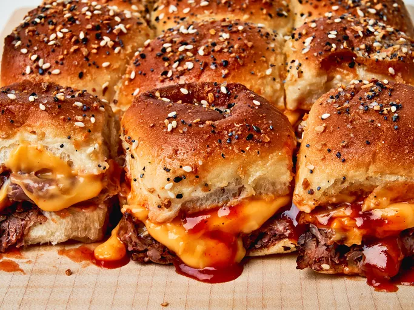

Roast Beef and Cheddar Sliders

Description
These roastbeef and Cheddar Sliders are so easy to put together, bake in just a few minutes, and are just as delicious as the fast-food favorite from your roast beef restaurant. And you don't have to leave home.
Ingredients
- 4 tablespoons butter, melted, divided
- 1(12 roll) package Hawaiian rolls, split in half horizontally
- 12 ounces deli roast beef
- 1/2 cup thin tangy BBQ sauce, such as Arby's Original Sauce
- 1 cup Cheddar cheese sauce
- 1/4 teaspoon garlic powder
- 1/4 teaspoon onion powder
- 2 teaspoon everything bagel seasoning
Steps
- Preheat the oven to 350 degrees F(175 degrees C). Brush the bottom and sides of a 9x13-inch baking dish with melted butter until lightly coated.
- Place bottom half of rolls in baking dish and top evenly with roast beef slices. Drizzle BBQ sauce evenly over roast beef and dollop cheese sauce evenly over the top. Place top roll halves on top.
- Stir together remaining butter, garlic poowder, and onion powder and brush evenly over bun top. Sprinkle with bagel seasoning.
- Bake in the preheated oven until the center is warm and melted, and bread is toasted and golden brown, 12 to 14 minutes.